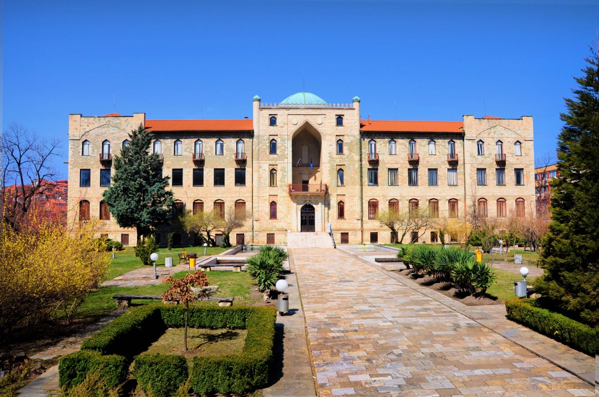

Допълнителна информация
Открит е през 1965 година със задачата да проучва, съхранява и популяризира културно-историческото наследство в Източни Родопи. Основния му фонд включва над 27 000 експоната ( 40 000 до днес ) - вещи, снимки и документи, свързани с историята на Кърджалийския край. Експозицията е открита през 1987 година, разположена е на 1800 м2 и е разделена на три секции - отдел „Археология“, отдел „Етнография“ и отдел „Природа“. За всеки един от тях е отделен по един етаж.